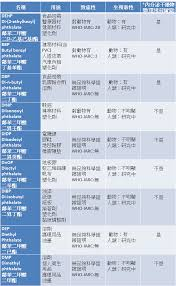
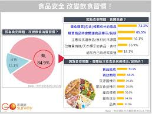

首頁
食安風暴過後，台灣民眾對食品業的憤怒與恐懼仍未消散，調查結果顯示，不信任食品業的民眾佔42.6%。這5年從不間斷的食安風波，到底是誰的責任？有52.3%的民眾認為，應歸咎於自主管理不善的業者，或是惡意違規以牟取暴利的黑心廠商；亦有26%的民眾表示，食安出包乃因政府監管不善。

有趣的是，少數讀者留言反映，台灣食安問題其實是社會各界的責任。首先是失能的公部門，有讀者指出，「食安法規未盡完善，違法廠商沒有受到應得的懲罰、政府單位與民眾溝通管道失能，無法傳遞食安知識予普羅大眾」。另一位讀者則表示，「貪便宜的消費者助長不肖業者出現。媒體聳動的偏頗報導造成消費者恐慌，並且打擊優良的業者」。

連到第一頁
連到第二頁
連到第四頁
連到第五頁